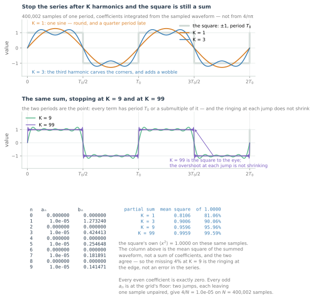
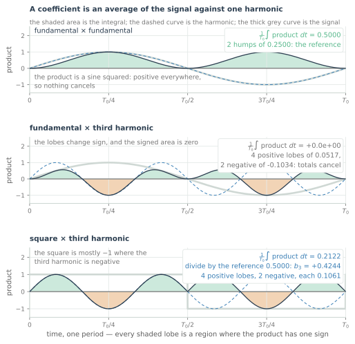
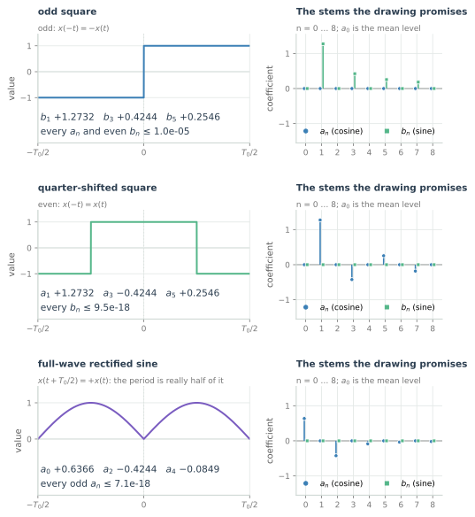
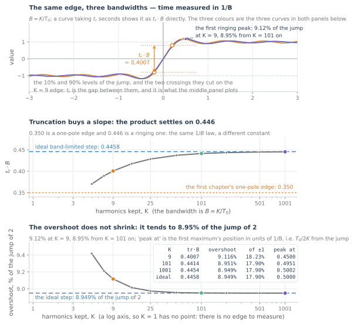
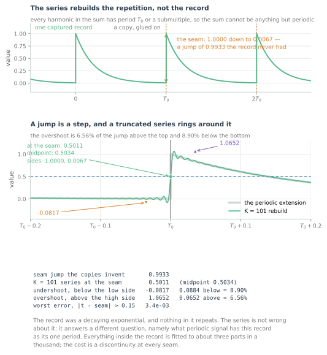
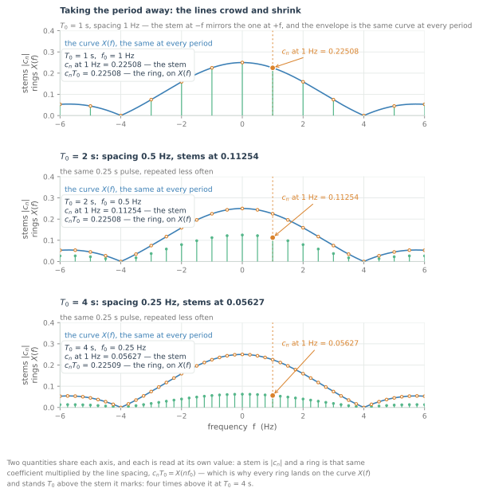
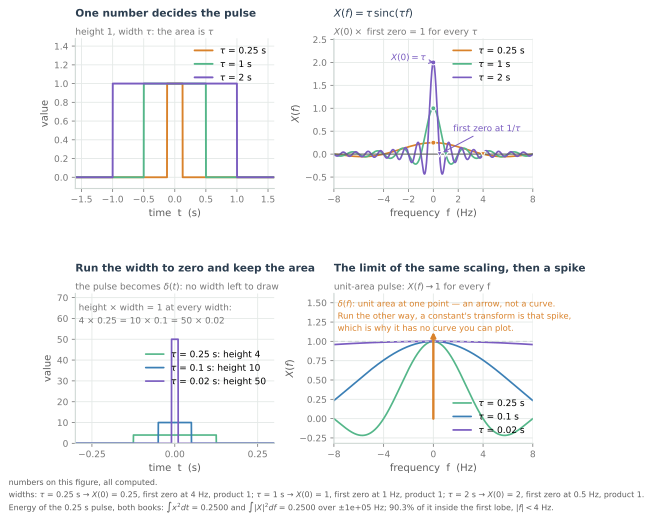

From Fourier Series to the Fourier Transform
Harmonics, the periodicity trap, and how letting the period go to infinity turns a sum into an integral.
Every spectrum you have met so far was borrowed. The sampling chapter convolved one with an impulse train to explain aliasing, the decibel chapter taught you to read one on a log axis, and the quantisation chapter computed one from a noise power. Each of them assumed a spectrum existed. None of them built one.
The debt is older than that. A sinusoid arrived in the first chapter as one of six elementary shapes — three numbers: an amplitude, a frequency, a phase — and nothing there said that a shape with a corner in it could be made out of them. The corner is the whole difficulty: a sine has no corner anywhere, and a square wave is nothing else. Accepting a spectrum without having seen that sum happen means accepting the most useful fact in the course on somebody else's authority.
So this chapter builds it. First a square out of sines, which is the Fourier series, with the coefficients measured from the waveform rather than quoted; then what a coefficient is actually measuring; then the drawing that deletes most of them; then what stopping at $K$ does to a corner; then what the sum does to a record that does not repeat; then the period taken away, which turns the series into the Fourier transform. Everything after this, the DFT in chapter 6, the FFT, every frequency-domain equaliser in the optical part of the course, is this chapter with a finite record bolted on.
A square wave is a sum of sines

The grey shape in the top panel is the thing to be explained: +1 for half a period, −1 for the next half, forever. Take the period to be $T_0 = 1$ s, so that one cycle is one second and the fundamental sits at 1 Hz; every number in this chapter is on that scale. The orange curve is what one sine gives you, the fundamental at the same period as the square, and it is not a square by any reading. It is round, it peaks a quarter period late, and the flat tops are simply absent.
Add one more term, the third harmonic, and the blue curve appears. The corners sharpen, the flat parts flatten, and the whole thing picks up a wobble it did not have before. That wobble is the first surprise of the subject. A term added to make the shape more square has made it worse somewhere else.
Keep going. Every term added is an odd multiple of the fundamental: the first, the third, the fifth. There are no even multiples in the stack, and the reason is a drawing in the third section. What changes as $K$ grows is where the error lives: at $K = 1$ everywhere, at $K = 3$ moved to the corners while the flat tops still wobble, at $K = 99$ only as a thin fringe of ringing at each jump. The fringe's height stops changing even though its width does not — 18.2% of the ±1 level at $K = 9$, 17.9% from $K = 101$ on. That fixed overshoot is the Gibbs phenomenon. At $K = 1$ there is no fringe at all, because the sum is a single sine and it peaks 27% above the square.
The coefficient table in the figure is what those curves are made of, produced by integrating the sampled ±1 waveform against each cosine and sine over one period — 400,002 samples, no formula allowed in — no $4/n\pi$, no closed form, no recalled series. The integral here is the rectangle sum $\frac{2}{N}\sum_j x_j\cos(2\pi n j/N)$, with $N = 400{,}002$ samples in the period; the $a_n$ column is the cosine coefficient and the $b_n$ column the sine coefficient. It prints
| n | $a_n$ | $b_n$ |
|---|---|---|
| 1 | +1.0×10⁻⁵ | +1.273240 |
| 2 | 0.000000 | 0.000000 |
| 3 | +1.0×10⁻⁵ | +0.424413 |
| 4 | 0.000000 | 0.000000 |
| 5 | +1.0×10⁻⁵ | +0.254648 |
| 7 | +1.0×10⁻⁵ | +0.181891 |
| 9 | +1.0×10⁻⁵ | +0.141471 |
Three things in that table are worth more than the rest.
The sine column is the square, and the cosine column is nothing. Every $b_n$ is the fundamental's value divided by n: 1.2732, 0.4244, 0.2546, 0.1819, and 0.1415 at the ninth — multiply any row by its own n and 1.2732 comes back. That $1/n$ is geometry: the $n$th harmonic crosses zero $2n$ times in the period, so each of its lobes is $1/n$ as wide as the fundamental's, and the area it collects from a fixed ±1 waveform narrows with them. The next section's figure draws that narrowing. Every even coefficient is exactly zero, because an even harmonic repeats after $N/2$ samples while the square flips sign, so the two half-sums cancel term by term. Every odd $a_n$ sits at $1.0\times10^{-5}$, which is the grid's floor rather than a physical number: two jumps each leave one sample unpaired, the residual is $4/N$ — and a coefficient that "is zero" is zero to the grid and not to the page. The sine column, by contrast, is exact — exact to the quadrature's own floor, which is a different floor: the rectangle sum itself is $(4/N)\cot(\pi n/N)$, which at $n = 9$ is 0.1414710603 against $4/(9\pi) = 0.1414710605$ — an absolute residual of $2.4\times10^{-10}$ and a relative one of $1.7\times10^{-9}$, four orders below the cosine column's $1.0\times10^{-5}$, which is absolute too.
The fundamental is larger than the square. 1.273240 is $4/\pi$, and $4/\pi > 1$. The first harmonic of a unit square has a peak 27% above the square itself. It catches people who expect the fundamental to be some average of the waveform; it is a projection, as the next section shows.
Power is the sum of the lines, and the figure checks it the hard way. The block on the right computes the mean square of each partial sum from the summed waveform, sample by sample, and compares it with the square's own mean square: 1.0000, because the waveform is ±1 everywhere. One harmonic carries 81.06% of it. Up to the third harmonic is two terms, and they carry 90.06%; up to the ninth is five terms, 95.96%; up to the ninety-ninth is fifty, 99.59%. Multiplying the table out as $\tfrac12\sum b_n^2$ gives the same four numbers, which is Parseval's theorem — the mean square is the sum of the lines — arriving early and unannounced.
The 4% still missing at $K = 9$ is not an error. It is the energy in the corners, and the corners are exactly what truncation has not yet rebuilt. That is a statement about a sum of sines, and it is the first hint that the two are not the same object.
What the table does not say is where any of these numbers came from: why integrating against a harmonic is the right thing to do, or where the factor in front of the integral comes from. That is the next section.
What each coefficient measures

A coefficient is what survives when you multiply the signal by one harmonic and average the product over a period. The figure does exactly that, three times, and shades the result.
The harmonic against itself is the reference. In the first panel the product is a sine squared, so it is positive everywhere, and its area over one period is 0.5000, exactly half the period. That number is not a coefficient. It is the reference: a harmonic present at unit amplitude produces this much area, so the coefficient is the product's area divided by it. Which means the divisor is $T_0/2 = 0.5$, and the multiplier $2/T_0$ in front of the integral is that division written the other way up. The divisor is not a convention someone chose; it is the area of the harmonic against itself, shown as two shaded humps of 0.2500 each, with the box printing their sum.
The harmonic against a different harmonic cancels exactly, but not lobe for lobe. The product changes sign, and the lobes are not equal: four positive ones of 0.0517 and two negative ones of 0.1034, with $4\times0.0517 = 2\times0.1034$. The totals cancel, which is why the area is exactly zero rather than nearly so. Four-two rather than three-three is the tangency: at $T_0/2$ both factors vanish at once, so the product touches zero there without crossing, and the two lobes either side are one lobe split in two — the sequence runs $+,-,+,+,-,+$ rather than alternating. The samples do not cancel in pairs either: the product repeats every $T_0/2$, so $p[j] = p[j+N/2]$, and each half of the period carries a signed area of zero on its own. That is what orthogonality means, and it is why the third harmonic cannot contaminate the first harmonic's measurement.
The square against the third harmonic is where the coefficient comes from. This is the one that does real work. The third harmonic's lobes no longer line up with the square's: the square is +1 over two-thirds of the region where the third harmonic is positive and −1 over two-thirds of the region where it is negative, so all six lobes come out the same size, 0.1061, and what decides the sum is the count — four of them positive against two negative. The shaded area does not cancel, and it comes out 0.2122. Divide by the reference area, 0.5, and you have 0.4244, the $b_3$ of the table, to four decimals, from an integral of the plotted waveform.
So the recipe is: multiply by the harmonic, average the product over a period, divide by the harmonic's own mean square. The two shaded reference humps in the first panel are the harmonic against itself; the area they enclose over one period is $T_0/2$, which is 0.5 here precisely because $T_0 = 1$ s, while the mean square is that area divided by the period, $(T_0/2)/T_0 = 1/2$ at any period. Written out for a real signal, that is
and the formula comes last because every part of it has already been read off a picture: the product, the lobes, the cancellation, the area, the divisor. It covers $n \ge 1$. The constant is the exception: $a_0$ is printed as the level itself — the waveform's mean, the $n = 0$ case with no factor of 2 — so the sum is $a_0 + \sum_{n\ge1}\left(a_n\cos\tfrac{2\pi nt}{T_0} + b_n\sin\tfrac{2\pi nt}{T_0}\right)$. The other convention writes $a_0/2$ in front of the constant and doubles the number, which is why the rectified sine of the next section prints $a_0 = 0.6366$ and not 1.2732.
There is one more thing to notice in that formula, and it is the upper limit. The integral runs from 0 to $T_0$: one period, and no further. The area outside the window is nowhere in the answer. The figure did not need it either, because a product curve drawn over one period is enough to compute the area: the product is periodic. But that is a statement about the product, and the product is periodic because the signal is. If the signal outside the window were something else entirely, this integral would not know. Hold on to that. It is the right question, it has no answer yet, and the fifth section is where it bites.
Symmetry decides which harmonics survive

The table in the first section was mostly zeros, and the zeros were not luck. A drawing decides which harmonics can survive before any integral is done, and three drawings cover almost every case you will meet.
An odd signal has only sines. The square wave is odd, $x(-t) = -x(t)$, and its cosine column is at the grid's floor while its sine column is exact. That is the geometric statement: a cosine is even, an odd signal times an even one is odd, and an odd function integrates to zero over a symmetric interval. The figure still integrates both columns and prints what survives in each, so the measurement confirms the drawing rather than replacing it.
An even signal has only cosines. Advance the square by a quarter period and it becomes even: +1 in the middle of the period, −1 at both ends. The figure draws one period centred on the symmetry axis, from $-T_0/2$ to $T_0/2$, so the shape you read off it is the one described here. The amplitudes are exactly the ones the sine column had, 1.2732 and 0.4244, and they have moved into the cosine column with the sign of the third flipped, so $a_3 = -0.4244$. The sine column is now at $9.5\times10^{-18}$, zero as far as double precision can tell. Nothing was gained or lost by the shift; the same harmonics are there, mixed differently. That is what a phase shift is, and the first chapter's remark that a phase-shifted sinusoid is a mixture of cosine and sine is the one-line version of this picture.
The sign of the half-period relation decides which set goes. The third shape is $|\sin|$, whose period is really half of $T_0$, and it satisfies $x(t + T_0/2) = +x(t)$. Its odd harmonics are gone — the largest odd coefficient is $7\times10^{-18}$ — and what survives is the mean level $a_0 = 0.6366$ and an even series: the second harmonic at −0.4244, the fourth at −0.0849, and so on. Note the sign in that relation. The version most textbooks call half-wave symmetry is $x(t + T_0/2) = -x(t)$, and it deletes the even harmonics instead. Two relations, one letter apart, opposite conclusions: a waveform that repeats every half period has no odd harmonics, and a waveform that negates itself every half period has no even ones. Both are decidable from the drawing in about a second, and both save an integral.
This is also where the first chapter's promise gets paid: it said a real even signal has only cosine terms and a real odd one only sine terms, and left it as a remark about symmetry. Here are three signals, three drawings and three measured coefficient sets, and the remark is a measurement.
The practical version, for a reader with a scope and no software: look at the waveform's centre and its ends. Symmetric in sign → cosines; antisymmetric → sines; identical a half period later → even harmonics only; negated a half period later → odd only. Four sentences, and all four are on the figure.
What truncation does to an edge

Every curve in the first section was an approximation, and the error is not spread evenly: it is concentrated at the corner.
The top panel draws the same edge three times, at $K = 9$, 101 and 1001, on an axis whose unit is not seconds but seconds multiplied by the bandwidth: $B = K/T_0$, the highest harmonic kept, expressed as a frequency. The axis is chosen that way because of the answer. An edge rebuilt from $K$ harmonics takes a rise time inversely proportional to $K$, so multiplying that time by $B$ gives a number that barely moves. Measured on the ten-to-ninety-percent crossings of the plotted partial sums, with $t_r$ the rise time, it prints
| K | $t_r\cdot B$ | overshoot, % of the jump of 2 | of the ±1 level |
|---|---|---|---|
| 9 | 0.4007 | 9.12% | 18.23% |
| 101 | 0.4414 | 8.95% | 17.90% |
| 1001 | 0.4454 | 8.95% | 17.90% |
| ideal band-limited step | 0.4458 | 8.95% | 17.90% |
Three readings, in order of importance.
The rise time is set by the bandwidth, not by the shape. $t_r\cdot B$ barely moves: 0.4007 at $K = 9$ against 0.4458 for an ideal band-limited step, an 11% variation that the middle panel's sweep shows closing as the curve rises to 0.446. So $t_r \propto 1/B$ to within that 11%: keep more harmonics and the edge gets proportionally faster, and what sets the speed is only how far out you kept them. That is why the answer to "how fast can this edge be?" is a bandwidth and not a count of terms.
The constant is 0.446, and it is not the first chapter's 0.35. The middle panel puts the two on one axis on purpose. The $0.35/B$ of the first chapter is the rise time of a one-pole edge: a single real pole, monotone, no overshoot, the shape an RC or a first-order amplifier produces. A truncated square gives you a corner that has been low-passed by a brick wall, and a brick wall rings. Same $1/B$ law, different constant, and the 27% between them is the difference between a rise time you can meet and one you cannot. Never merge the two into "the rise-time constant": one is a monotone edge, the other a ringing one.
The overshoot is not going away. It is 9.12% at $K = 9$, 8.95% at $K = 101$, 8.95% at $K = 1001$, and 8.95% for the ideal band-limited step: the limit of the sequence, not a shortfall of the finite sum. More harmonics move the ringing closer to the corner and make it narrower; they do not make it shorter. Its height is a property of the discontinuity, not of how well you approximated it.
Watch which step the percentage is a fraction of, because both are in circulation. The waveform jumps from −1 to +1, a step of 2, and the ideal step's first ringing peak reaches 1.1790. That is 8.95% of the jump of 2, and simultaneously 17.9% of the ±1 level: the same peak, a factor of two apart, because one denominator is the step and the other the amplitude. The figure prints both columns for that reason. Quote the one you mean and say which. The peak's position converges too: the first maximum sits $T_0/2K = 0.5/B$ from the jump, measured at 0.4500, 0.4951 and 0.5002 for the three $K$.
Invert the product and the section's estimate falls out:
with $f_0 = 1/T_0$. A 1 GHz square with a 10 ps rise time needs $K \approx 45$ harmonics. Neither the period nor the rise time sets it alone: the period sets the spacing of the harmonics, and the rise time, as a fraction of the period, sets how many of them you have to keep. Halve the period at the same edge and $K$ halves, because the same edge is now a larger fraction of a shorter period: 45 at 1 GHz, 22 at 2 GHz.
Two warnings belong with it. The count is what reconstructs the ten-to-ninety rise, not what closes an eye, and the 8.95% overshoot sits at the corner of every edge in the pattern.
The sum only knows the repetition

The question from the second section is due: the integral ran over one period, so what did it assume about everything outside?
Take a record that does not repeat. The top panel is one second of $e^{-t/0.2}$, sampled at 400,002 points. It starts at 1.0 and ends at 0.0067, and nothing in it repeats. Now do what the coefficients do: butt-joint copies of it, end to start, forever. The seam is a jump from 0.0067 up to 1.0, a jump of 0.9933 that the record never had and the gluing invented.
The middle panel is the $K = 101$ series of that record, rebuilt across the seam, against the periodic extension. At the seam itself the series returns 0.5011. Not 1.0 and not 0.0067: the midpoint of the two sides is 0.5034, so the series misses it by 0.0023 — inside the $3.4\times10^{-3}$ the interior fit already carries. Either side of the seam it rings, because a jump is a step and a truncated series rings around a step: down to a level of −0.0817, which is 0.0884 below the low side of 0.0067 and 8.90% of the jump, and up to 1.0652, which is 0.0652 above the high side and 6.56% of the jump. Two different percentages, because the two sides are not the same shape — the low side is the flat tail of an exponential, the high side its steep start. Away from the seam the worst error is $3.4\times10^{-3}$ over the middle 70% of the record, three parts in a thousand.
None of this makes the series wrong. What would? If the record's ends met, if the signal were periodic with the period you chose, the extension would be the signal and the coefficients would describe it exactly. The failure is not in the mathematics; it is in the assumption that came in with the word "period" and was never checked.
The cost is now visible. A record whose ends do not meet gets a jump at every seam, and that jump has energy at every frequency. In the spectrum it appears as a skirt that reaches into every bin, which is why a captured record of 100.5 periods is worse than one of exactly 100. That skirt is leakage, and it is chapter 8's subject.
Taking the period away, and what it costs

The last step turns this chapter into the rest of the course, and it begins with a change of bookkeeping the figure draws rather than states.
A real coefficient pair $(a_n, b_n)$ is one complex number. Pack them as $c_n = \tfrac12(a_n - j b_n)$, where $j$ is the imaginary unit, $j^2 = -1$, and the series becomes a sum over positive and negative n. Negative frequency is not a second signal: $e^{j2\pi ft}$ and $e^{-j2\pi ft}$ are the two counter-rotating halves of a cosine, $\cos(2\pi ft) = \tfrac12\left(e^{j2\pi ft} + e^{-j2\pi ft}\right)$, which is exactly where the second half of the stem pair comes from. The bar means complex conjugate — the same number with the sign of its imaginary part flipped, which is why $c_{-n} = \overline{c_n}$ and why the stem at −f mirrors the one at +f. Nothing physical has changed; the notation is one number per line instead of two.
Now the experiment. One rectangular pulse, 0.25 s wide and unit high, repeated every $T_0$. At $T_0 = 1$ s the lines are 1 Hz apart and the one at 1 Hz has magnitude 0.22508. At $T_0 = 2$ s the spacing is 0.5 Hz and the same line is 0.11254. At $T_0 = 4$ s, 0.25 Hz apart and 0.05627.
Before reading the third number, predict it. Doubling the period doubles the quiet time around each pulse, and a coefficient is the transform multiplied by the line spacing, $c_n = X(nf_0)/T_0$, so halving the spacing halves the same line. The first panel is enough to predict the second, and that prediction, not the number, is what the section tests: it is the difference between knowing what the $1/T_0$ does and having memorised a pair of values.
What does not change is $c_n\cdot T_0$: 0.22508, 0.22508 and 0.22509, agreeing to about $10^{-5}$ (the spread is $1.1\times10^{-5}$). That product is the transform of the single pulse at 1 Hz, and the same curve is drawn over all three panels: $X(f) = \tau\,\mathrm{sinc}(\tau f)$ for a pulse of width $\tau$, fixed while the stems crowd and shrink beneath it. Here $\mathrm{sinc}$ is the normalised cardinal, $\mathrm{sinc}(u) = \sin(\pi u)/(\pi u)$, equal to 1 at $u = 0$. The stems themselves are $|c_n| = |X(nf_0)|/T_0$, so they sit below the curve by the period. The rings on the figure are each stem multiplied by its own $T_0$, and every one of them lies on $X(f)$. So the vertical axis carries two quantities, each read at its own value: a stem is $|c_n|$, a ring is $c_nT_0$, and the figure says which.
That is what "the coefficients become a density" means. A coefficient is an amplitude; the transform is an amplitude per hertz; the factor between them is the line spacing. As $T_0$ grows the spacing shrinks, the lines crowd, each carries proportionally less, and the product stays put.

The pair is worth its own figure: it is the transform everyone should be able to sketch from memory. A rectangle of width $\tau$ and height 1 has $X(f) = \tau\,\mathrm{sinc}(\tau f)$: a peak of $\tau$ at zero frequency, a first zero at $1/\tau$, sidelobes decaying as $1/f$.
Widening the pulse trades height for width and changes nothing else. For $\tau$ = 0.25, 1 and 2 s the peak is 0.25, 1 and 2, the first zero is at 4, 1 and 0.5 Hz, and $X(0)\times$ first zero is 1 every time, a time–bandwidth product of exactly one, and the reason a narrow pulse has a wide spectrum.
The energy ties the two domains together. For the 0.25 s pulse, $\int x^2\,dt = 0.2500$ and $\int |X|^2\,df = 0.2500$ over a band wide enough to hold the tail, with 90.3% of it inside the first lobe, $|f| < 4$ Hz. That is Parseval, and it is why a spectrum can be read as a budget: the area under $|X|^2$ is the energy you started with, and the fraction inside a lobe is a number you can spend.
The limit is where the pair stops being drawable. Hold the area at one and let the width go to zero: the pulse becomes $\delta(t)$ and its transform flattens towards 1 for every f. Run the scaling the other way and a constant has a spectrum that is a single spike at $f = 0$ of unit area, not a curve but a spike — which is why the figure draws an arrow. The constant is a power signal with infinite energy, its transform integral diverges at both limits, and the ordinary transform exists for signals with finite area, $\int |x(t)|\,dt < \infty$: absolute integrability, which is what makes the integral converge. That condition is sufficient where finite energy is not, and the two classes are not nested: a sinc has finite energy and infinite area and needs the weaker mean-square sense, while $t^{-1/2}$ on $(0,1]$ has finite area and infinite energy. That is why a pulse is described by a transform and a carrier by a power spectral density.
Which leaves the finite record, which is what you actually have. Everything here assumed a period and then took it away; a captured record has neither. The DFT in chapter 6 samples the transform, and in doing so makes the periodicity assumption of the fifth section explicit: a finite record plus an assumed period is the butt-jointed copy again, with the seam built into the definition rather than discovered at the end.
What to carry forward
- A periodic shape is a fundamental plus its integer multiples. The ±1 square is sines only, at $4/(n\pi)$: 1.2732, 0.4244, 0.2546, 0.1819. The fundamental is $4/\pi$, which is larger than the square it builds.
- A coefficient is a measurement. Multiply by the harmonic, average over a period, divide by the harmonic's own mean square, $1/2$. The $2/T_0$ in front of the integral is the $1/T_0$ of the average and the $2$ that dividing by $1/2$ supplies. Every other harmonic averages to zero against the one you are measuring.
- Symmetry deletes harmonics before any arithmetic. Odd → sines only. Even → cosines only. Repeats every half period → no odd harmonics; negates every half period → no even ones.
- Truncation buys a slope, never a corner. The 10–90% rise is $0.446/B$, not the first chapter's $0.350/B$ — a ringing edge is not a one-pole edge — and the overshoot settles at 8.95% of the jump of 2 (9.12% at $K = 9$), which is 17.9% of the ±1 level.
- The series of a record describes the repetition of the record. A record whose ends do not meet gets a seam jump (0.9933 here), split down the middle by the series (0.5011 against a midpoint of 0.5034) and ringed either side by 8.90% and 6.56% of the jump.
- Take the period away and the lines crowd by $1/T_0$ while shrinking by $1/T_0$. $c_n\cdot T_0$ stays fixed at the transform's value (0.2251 at 1 Hz for a 0.25 s pulse, to about $10^{-5}$), and the stems are that curve divided by $T_0$.
- rect ↔ sinc is the pair to know by heart. $X(0) = \tau$, first zero at $1/\tau$, product 1; energy 0.2500 both ways with 90.3% inside the first lobe.
- Finite area is what an ordinary transform needs, and it is sufficient where finite energy is not. Absolute integrability, $\int|x|\,dt < \infty$, is what makes the integral converge; the two classes are not nested — a sinc has the energy and not the area, $t^{-1/2}$ on $(0,1]$ the area and not the energy. A constant has neither, and its spectrum is a spike of unit area, not a curve you can plot.